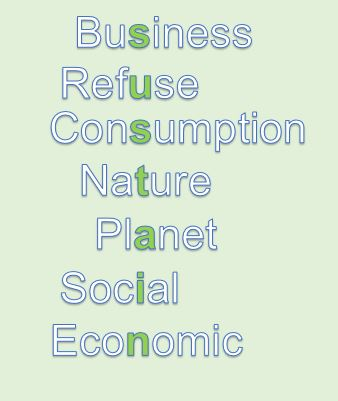
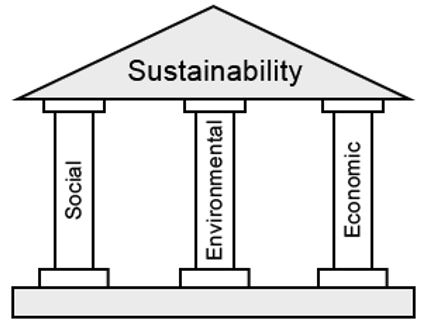
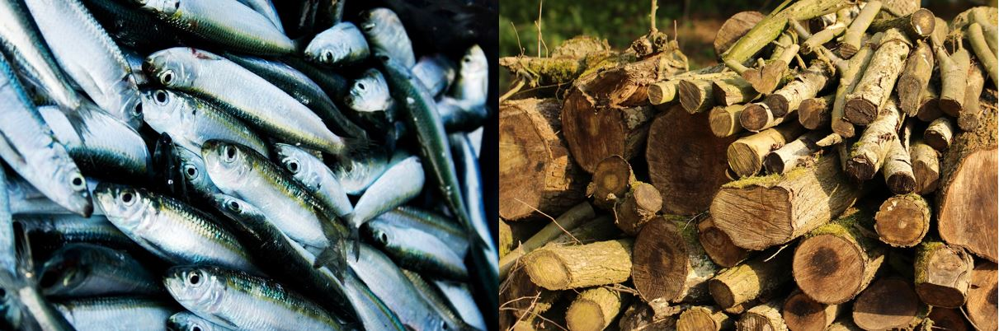
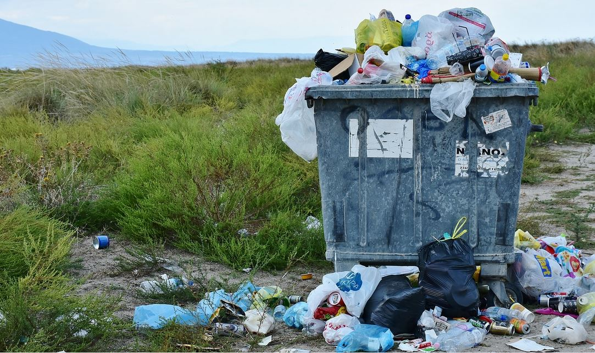
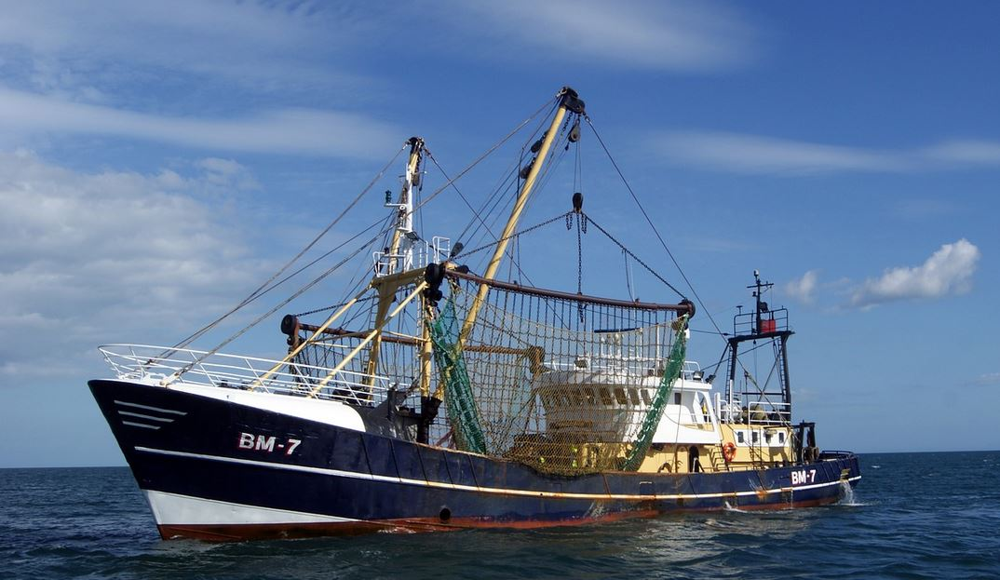
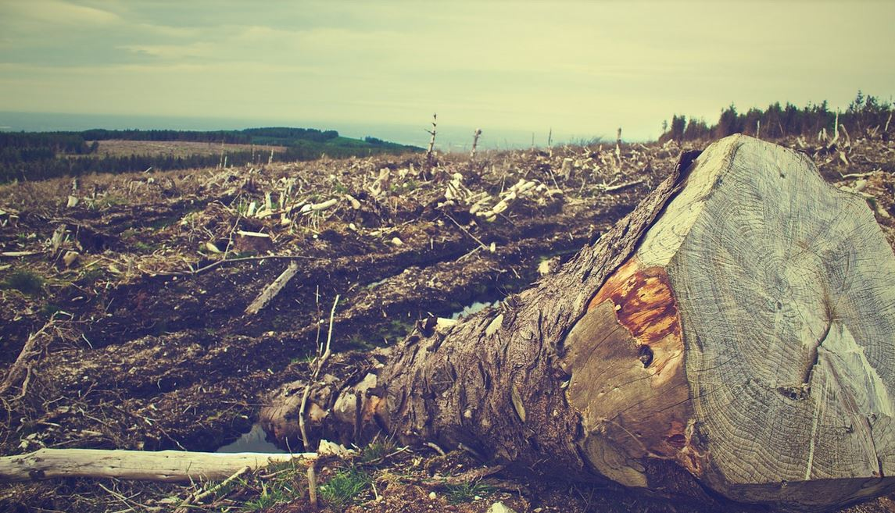
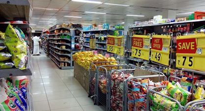
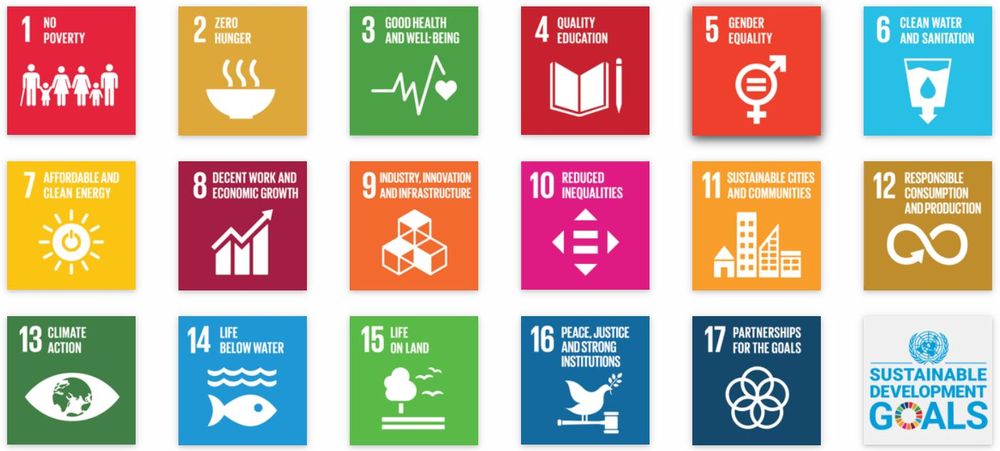
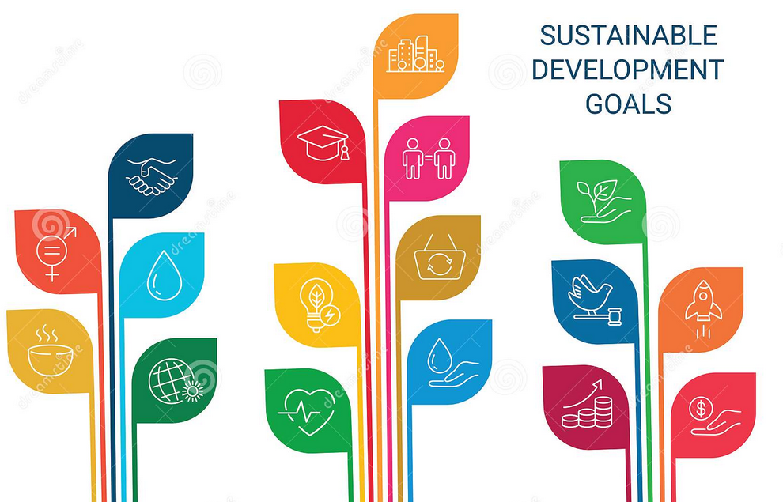
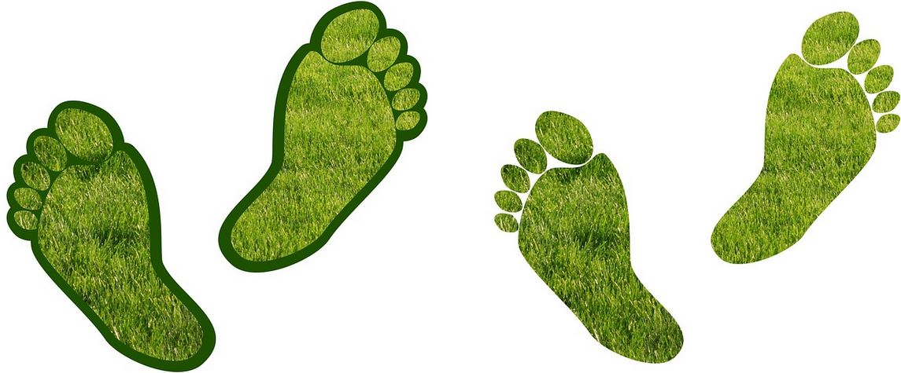

IB Docs (2) Team
IB Docs (2) Team

The triple bottom line
- /
- The Core/
- The EE/
- Tools, techniques & theories for the EE/
- The triple bottom line

“We need to think of the future and the planet we are going to leave to our children and their children.”
- Kofi Annan, Ghanaian diplomat (1938 - 2018)
“If it can't be reduced, reused, repaired, rebuilt, refurbished, refinished, resold, recycled or composted, then it should be restricted, redesigned, or removed from production.”
- Pete Seeger (1919 - 2014), American folk singer and social activist
Sustainability is one of the key concepts prescribed in the IB Business Management course. The triple bottom line (3BL) model discusses business management strategies and practices for ecological, social (human resource) and economic sustainability. According to the United Nations (UN), sustainability is defined as "meeting the needs of the present without compromising the ability of future generations to meet their own needs" (UN, 1987).
In a business context, the term sustainability refers to the ability of an organization or an economy to continue its business activities indefinitely. This means that its operations today do not jeopardise the opportunities for future generations. British author and entrepreneur John Elkington (1994) is a world-leading authority on corporate responsibility and sustainable development. Elkington coined the term the triple bottom line (or the three 3Ps of sustainability) to refer to the three pillars (aspects) of sustainability that businesses need to consider:
Social sustainability (People)
Ecological sustainability (Planet), and
Economic sustainability (Profit)

Elkington’s pillars of sustainability
"We have a finite environment - the planet. Anyone who thinks that you can have infinite growth in a finite environment is either a madman or an economist."
- Sir David Attenborough, British broadcaster, natural historian, and author

Overfishing and deforestation are ecologically unsustainable
Ecological sustainability (or environmental sustainability) refers to sustainable use of the planet’s natural resources so that the current level of consumption does not jeopardise the resources available for future generations. Without ecological sustainability, business activity will eventually deplete the planet’s natural resources.
Examples of unsustainable business activities include overfishing and deforestation. At a more micro level, many retailer have implemented a policy of "opt-in receipts" (where printed receipts are only given to customers if they request one - otherwise they can be emailed to customers instead).
Therefore, environmental sustainability requires the efficient and rational use of the earth’s resources. For example, many countries have introduced a charge (or tax) on the use of non-biodegradable plastic carrier bags. These countries include: Belgium, Denmark, England, France, Germany, Holland, Hong Kong, Ireland, Switzerland, and Wales. According to reusethisbag.com, Ireland reduced the use of plastic carrier bags by 90% (or over 1 billion bags) between 2001 and 2011 by imposing a per unit tax of $0.37. Some countries have banned the distribution of plastic carrier bags that are not made from biodegradable sources. These nations include: Bangladesh, Brazil, China, Italy, Mexico, Rwanda and Tasmania.

Many countries have taxes or bans on plastic bags
Operations management has a significant role in ecological sustainability. For example:
Lean production and quality management help to minimise the resources used to make goods and provide services
Cradle-to-cradle (C2C) design and manufacturing is used to reduce waste.
Production methods that involve the use of green technologies, such as the use of renewable energy sources (solar, wind and geothermal power).
Case Study 1 - Overfishing

Overfishing is the commercial practice of removing too many fish from their natural habitat such that the species
cannot replenish themselves in time. This can result in the fish stock becoming severely depleted or underpopulated, which endangers the species.
There is a global trend in overfishing, with some fishing businesses illegally overfishing. Overfishing creates a threat to sustainability and causes negative externalities of production (such as pollution caused by too many commercial trawlers operating in the oceans) and negative consumption externalities (such as the immense amount of food waste from over-consumption of seafood buffets).
Case Study 2 - Deforestation

Brazil’s continual reduction of forest areas is harmful for the country’s long-term environmental sustainability, according to Canada's Natural Resources Canada (NRC). By contrast, Bhutan has continually increased its forest areas. The NRC states that the ratio of forest areas to the total land area of a country is a major indicator of environmental sustainability. The NRC also states that forestry helps to sustain ecological functions such as carbon storage, nutrient cycling, water and air purification, and maintenance of wildlife.
Source: www.nrcan.gc.ca
ATL Activity 1 - Why is the Amazon rainforest being destroyed?
The Amazon rainforest is known for its biodiversity, but also for the growing problem of deforestation. As the world’s largest tropical rainforest with an area of 5.5 million km², the Amazon rainforest covers much of northwestern Brazil and extends into Colombia, Peru and other South American countries.
Knowledge - List reasons why deforestation takes place.
Understanding - Write a short paragraph stating why deforestation is happening.
Application - Write a short paragraph describing the reasons for deforestation in a specific area you have studied. Include facts and figures in your response.
Analysis - What problems exist in the Amazon Basin that cause deforestation?
Evaluation - Are there any feasible solutions which may prevent deforestation? In your response, consider the reasons why businesses are involved in deforestation and think of some alternative, feasible and sustainable solutions to the issue.
Creation - What would happen if Brazil gave the Amerindians more rights to the land within which they live?
ATL Activity 2 - The World Counts (climate change)
Take a look at The World Counts website to see how the earth’s average temperature is continually rising. According to the website, if no action is taken to tackle the global problem of climate change, temperatures could increase by 5 degrees by 2100. Use the website to help answer the question below.
What are the economic implications of global temperatures rising by around 5 degrees within the next eight decades?
According to the UNDP, climate change is the most defining issue of our time and the most significant challenge to sustainable development. The compounding effects of climate change are speeding up, leaving even less time for people, firms, and governments to act. Unprecedented changes in all aspects of society will be required to avoid the worst effects of climate change, bringing with it massive wildfires, hurricanes, droughts, floods, and other climate disasters across all continents.
ATL Activity 3 - The Coca-Cola Company
Coca-Cola is the world’s most successful consumer drinks company. However, this also means the company is the planet’s largest plastic polluter. Read this BBC article about Coca-Cola’s impact on the environment, and answer the questions that follow:
https://www.bbc.co.uk/news/business-50175594
This task can also be useful for the CUEGIS assessment.
- Coca-Cola was once associated with “teaching the world to sing”. According to the author, what is it being increasingly associated with today?
Plastic pollution and childhood obesity
- Who is the global chief executive of the Coca-Cola Company?
James Quincey
- How many plastic bottles does the Coca-Cola Company produce each year?
Over 100 billion plastic bottles!
- What does the company aim to achieve by 2030?
To recover every plastic bottle for every one the company sells, and to use 50% of this for new bottles (an example of cradle to cradle manufacturing)
- What is Coca-Cola’s annual sales revenue?
Over $40 billion (that equates to $109,589,041 in sales revenue every day of the year!)
- What are the largest growth areas for the company?
Zero-sugar versions of Coca-Cola and the company’s water and juice drinks
- When did the UK government introduce its sugar tax?
2016
- If Coca-Cola reduced its use of plastics by 5%, how many plastic bottles would be avoided in the production process?
500 million fewer bottles (which is the same as saving 1,369,863 plastic bottles per day of the year, or a staggering 57,077 plastic bottles each hour of the day, every day)
In 2018, Coca-Cola used three million tonnes of plastic in its global operations. Coca-Cola sells more than 100 billion throw-away plastic bottles each year - that's more than 8.3 billion plastic bottles per month, 1.9bn per week, almost 274 million per day or more than 11.4 million single-use plastic bottles per hour! Across the planet, more of Coca-Cola's plastic packaging is found littered than any other brand. Since then, Coca-Cola has announced that the company will replace all plastic shrink wraps for its multipacks, and replace these with 100% recyclable cardboard. Read more about this initiative here.
Case Study 3 - Marriott Hotels
Read this short article about Marriott, the world’s largest hotel chain, removing plastic straws from its 6,500 hotels. This is an important move for the organization’s ecological sustainability as many of its hotels are on beachfront locations and other areas of natural beauty (where the plastics could plastic waste could easily make their way into the sea or into the natural environment.
Case Study 4 - Prada
Read this article about luxury brand Prada’s “Re-Nylon” project, which aims to replace all of the company’s nylon products with recyclable ocean trash by the end of 2021. Whilst many luxury brands continue to use the finest leathers, silks and cashmeres from around the world, Prada’s efforts to invest in sustainable alternatives has led the business to use ocean plastics and fishing nets to make its bags. Prada’s Re-Nylon bags range from US$1,550 to $1,790.
Case Study 5 - France bans waste foods

In 2016, France became the first country in the world to ban supermarkets from throwing away unsold food products, such as fresh bread, fruits, vegetables, eggs, fresh milk and other perishable goods. Instead, supermarkets are required to donate the food items to charities and food banks.
This fantastic documentary titled “A Plastic Ocean” shows why sustainability is so important. The 2016 documentary is not available for free online, but watch the trailer here to get a glimpse of why ecological sustainability is vital to our own human survival:
For the non-faint hearted, here is a short snippet of the documentary, that shows why so many birds are dying from the plastic pollution in our oceans, with one scene showing 234 pieces of plastic waste inside a dead bird:
But it is not all doom and gloom. Some organizations, such as Ecoalf, have embraced upcycling by using plastic waste from the oceans to create products such as clothes. Watch this short video that introduces the EcoAlf Foundation's Ocean Waste and Recycling Partnership.
Ecological sustainability strives to achieve economic goals of society without having to deplete more of the planet ́s natural resources. Upcycling the oceans is one way to achieve this aim. It involves organizations and volunteers to collect trash destroys the oceans and ecosystem, by turning plastic waste into top-quality yarn to produce fabrics and other products. Ecoalf has managed to create a new 100% recycled filament, called "UTO Yarn", which is made of the plastic bottles recovered from the bottom of the Mediterranean Sea.
Ecoalf's Upcycling the Oceans programme is an unprecedented worldwide project that aims to remove plastic waste from the bottom of the oceans, with the help of fishermen and other volunteers. The revolutionary project's main goal is to recover the trash, mainly plastic waste, that is destroying the oceans in order to give the seas a second chance of life. Ecolaf's Upcycling the Oceans project started in September 2015 in the Mediterranean Coast of Levante (Spain), and has expanded throughout the Mediterranean and has also been replicated in Thailand.
With more people, comes more consumption
Social sustainability focuses on the extent to which an organization or economy can meet the needs of the current generation without jeopardising the needs of future generations. For example, population growth around the world results in greater levels of consumption and depletion of the earth’s natural resources. Social sustainability enables people of the current and future generations to enjoy a decent quality of life.
ATL Activity 7 - Population trends
Take a look at this website (Worldometers.com) with some fascinating live data, including the size of the world’s population, as well as the populations of the world’s 20 largest countries (by population size). Click here to see the information on this website, which clearly points to the importance of social sustainability.
Case Study 6 - Population milestones
8 billion: 2022 (15th Nov 2022)
7 billion: 2011
6 billion: 1999
5 billion: 1987
4 billion: 1974
3 billion: 1960
2 billion: 1930
1 billion: 1804
Social sustainability requires allocating resources in such a way to maximise the quality of life for people within a society. For example, by removing social barriers such as gender inequalities, human resources are allocated more efficiently in society. This results in women being provided equal opportunities in the workplace, and hence higher household incomes too.
However, social barriers exist which prevent or limit social sustainability. Examples include absolute poverty, unemployment and social imbalances (such as racism, ageism, sexual discrimination, and gender inequalities). Elkington argues that businesses need to embrace social justices, especially the fair treatment of women in the workplace as this can result in many opportunities in terms of productivity gains, employee morale, and a more positive corporate image. In fact, gender equality is the fifth of the United Nations Development Programme (UNDP)’s Sustainable Development Goals. This means that gender equality, and the empowerment of women in particular, is vital to both economic and human development in the long term.
Gender equality is vital to social sustainability
ATL Activity 4 - Social sustainability and the UNDP SDG

Source: https://www.undp.org/content/undp/en/home/sustainable-development-goals.html
The Sustainable Development Goals (SDGs), part of the United Nations Development Programme, were adopted by all UN Member States back in 2015 as a universal call to action to end world poverty, protect the planet, and ensure that all people across the globe enjoy peace and prosperity by 2030.
Read more about the United Nations Development Programme’s Sustainable Development Goals here and here (from the website of the United Nations), making links to social sustainability.
Students can also refer to this short video about the SDGs:
Students are not expected to learn all of the UN SDGs although being able to understand the overview and purpose of these goals can help them to better understand the concept of sustainability in IB Business Management. There are plenty of discussion points that can arise from this part of the syllabus, such as:
Why hotels around the world offer all-you-can-eat buffets
Whether high-income nations can justify their overconsumption of goods and services
Why the world's poorest people have minimal access to the planet's resources
The pro's and con's of China's previous one-child policy relative to other means to control population growth
The costs and benefits of an ageing population.
Economic sustainability (Profits)
Over-production can cause pollution and waste
Economic sustainability is about using resources, both natural and manufactured, efficiently and responsibly. It is able encouraging businesses to focus their strategies on long-term rather than short-term profitability targets, and the long-term consequences of economic activities. This also has a direct impact on people’s jobs and careers in the future.
A lack of economic sustainable business behaviour causes over-production and over-consumption in the short run. Increased populations across the world and higher per capita income have led to greater demand and consumption, making it increasingly difficult to maintain the output of goods and services to meet consumer needs and wants. However, the greater levels of production result in an inefficient allocation of resources, and creates a threat to economic sustainability. This is worsened if over-production and over-consumption results in more pollution and waste. Moreover, overuse of non-renewable resources means that businesses will struggle to operate efficiently in the long run, thus harming their long term profitability and threatening their survival.
Watch this short video clip about sustainable banana farming in Australia, asking students to consider the importance of 'best management practices (BMP)' in environmentally-sustainable farming:
This video showcases how banana farmers in North Queensland, Australia are using environmentally-sustainable farming practices to reduce the impacts on local waterways and the Great Barrier Reef lagoon.
Possible benefits of best management practices (BMP) include:
long-term sustainability of farmland, despite the rain and storm season
long-term sustainability of the environment, including protection of the Great Barrier Reef lagoon area
Restoring riverbanks and soils lost due to tropical cyclones and other natural disasters
Restoration of natural habitats and ecosystems, including the return of natural wildlife such as ducks, eagles, other birds and even crocodiles.
Case Study 7 - IKEA's generous offer to buy back old furniture
An IKEA store in Kraków, Poland
In October 2020, IKEA announced that it would buy back unwanted furniture for up to half original price. IKEA, the world’s biggest furniture chain, said it would buy back unwanted furniture from customers and resell these as secondhand products in an attempt to become more environmentally friendly. On the surface of it, this was a great move in terms of the company's ethical objectives and corporate social responsibility (CSR), as well as its attempt to act in a more sustainable way. The Swedish company’s Buy Back initiative was launched in stores across the UK and Ireland on 27 November 2020 (the Black Friday discount day).
The scheme is also of direct benefit to IKEA, as customers taking advantage of this initiative receive vouchers to spend in store (i.e. not cash). The value of the returned / unwanted furniture is calculated according to the condition of the items returned. The returned items are put on sale in stores and anything that cannot be resold to customers is simply recycled.
The move by IKEA is an attempt to build a "circular business model" (cradle to cradle design and manufacturing) in which materials and products are reused or recycled. IKEA announced it was investing more than €3.2 billion ($3.76 billion) on sustainability measures in order to become carbon neutral within the next decade (by the end of 2030).
Read more about this story featured in The Guardian by clicking the link here.
ATL Activity 9 - Sustainability goals and business functions
The United Nations Development Programme (UNDP) - Millennium Development Goals (MDGs) and Sustainable Development Goals (SDGs)

Business operations are bound by the rules, regulations and laws of the countries in which they operate. Prior to the agreement on the 17 SDGs in 2015, member states of the United Nations focused on the eight Millennium Development Goals (MDGs). These were originally planned to be achieved by all 193 UN member countries by 2000 (hence the name). However, the target for achieving the MDGs was extended to 2015, prior to UN members adapting the new Sustainable Development Goals (SDGs).
Get students to work in pairs or groups of three to summarise the MDGs and the SDGs. Importantly, they need to be able to apply these sustainability goals to business organizations and business functions. Ask them to evaluate the implications of these goals on business operations (they may choose to use a PEST or STEEPLE framework for this.
The eight Millennium Development Goals of the United Nations Development Programme (UNDP) were to:
Eradicate extreme poverty and hunger, i.e. reducing the number of people whose income is below $1.25 a day and those who suffer from hunger (such as underweight children). Note: In line with increased costs of living (due to inflation), the World Bank revised this figure – which represents the international poverty line – to $1.90 per day in 2015.
Achieve universal education to primary level (at least), i.e. to raise the school enrolment rate and the literacy rate.
Promote gender equality and empower women, i.e. social, economic and ethical reasons for promoting gender equality, including equal access to education and employment.
Reduce child mortality rates, i.e. reducing the infant mortality rate such as by raising the number of young children who are immunised against measles.
Improve maternal health, i.e. raise the proportion of births supported by skilled health professionals such as qualified doctors and nurses.
Combat diseases such as HIV/AIDS and malaria, i.e. to stop the spread of HIV/AIDS and major diseases such as malaria and tuberculosis.
Ensure environmental sustainability, e.g. by reducing energy use and carbon emissions whilst improving access to clean water sources and better sanitation.
Develop a global partnership for development, i.e. to address the needs of low-income countries, including debt servicing, debt relief, sustainable debt, infrastructure and employment opportunities for women and the youth.
Although the MDGs were not all fully achieved by 2015, there have been some major achievements that enabled the UNDP to create the SDGs. For example, although extreme poverty and hunger have not been completely eradicated, more than 1 billion individuals were lifted out of extreme poverty between 1990 to 2015. The infant mortality rate has also decreased by more than half since inception of the MDGs. The number of children who do not attended any form of education has also dropped by more than half from its pre-1990 level.
The United Nations Development Programme’s Sustainable Development Goals (SDGs) were conceived at the Earth Summit in Rio De Janeiro, Brazil during the June 2012 UN Conference on Sustainable Development (UNCSD). These 17 SDGs were developed to replace the 8 Millennium Development Goals (MDGs), which were scheduled to end in 2015. UN member states agreed to a timeline of achieving the SDGs by 2030.
The 17 SDGs, to be achieved by 2030, are:
End poverty in all its forms everywhere.
End hunger, achieve food security and improved nutrition and promote sustainable agriculture.
Ensure healthy lives and promote well-being for all at all ages.
Ensure inclusive and equitable quality education and promote lifelong learning opportunities for all.
Achieve gender equality and empower women and girls.
Ensure availability and sustainable management of water and sanitation for all.
Ensure access to affordable, reliable, sustainable and modern energy for all.
Promote sustained, inclusive and sustainable economic growth, full and productive employment and decent work for all.
Build resilient infrastructure, promote inclusive and sustainable industrialization and foster innovation.
Reduce inequality within and among countries.
Make cities and human settlements inclusive, safe, resilient and sustainable.
Ensure sustainable consumption and production patterns.
Take urgent action to combat climate change and its impacts.
Conserve and sustainably use the oceans, seas and marine resources for sustainable development.
Protect, restore and promote sustainable use of terrestrial ecosystems, sustainably manage forests, combat desertification, and halt and reverse land degradation, and halt biodiversity loss.
Promote peaceful and inclusive societies for sustainable development, provide access to justice for all, and build effective, accountable and inclusive institutions at all levels.
Strengthen the means of implementation and revitalize the global partnership for sustainable development.
Source: UNDP
ATL Activity 10 - The importance of green credentials

Read this interesting article from phs about the importance of green credentials and how businesses can improve their green credentials.
Green credentials refers to the credibility of a business in terms of its ecological sustainability, which will also have a direct impact on its economic sustainability. For example, a business which actively engages with the three Rs (reduce, reuse, and recycle) is likely to have better green credentials than firms that do not. The three Rs is a simple framework that can be applied across the board to businesses of all sizes in all industries.
It is increasingly challenging for organizations to ignore business ethics, sustainability issues and considering the environmental impacts of their operations. Sustainability is of growing importance to customers and governments around the world.
Read the article above and consult any other resources to answer the two questions below:
Why are green credentials important?
What are the main ways suggested in the article to help businesses to improve their green credentials?
Having green credentials is an increasingly important factor for all businesses. Having good green credentials helps a business to manage its brand / corporate reputation. Many businesses actively take steps to become more sustainable and ethical, which also helps to improve its market standing with customers and improves its economic sustainability (profitability).
The article suggests five "simple ways" to improve an organization's green credentials:
Cutting back, i.e. reducing the use of resources, especially non-renewable resources.
Invest in resource-saving appliances, i.e. switching to modern, more energy-efficient appliances and devices / technologies.
Encourage green commuting, i.e. reducing the firm’s overall carbon footprint, such as by encouraging staff to think green when commuting (taking public transport, walking or cycling to work rather than driving).
Implement a recycling strategy, i.e. embedding a recycling culture in the workplace.
Get staff on board and involved in green credentials, sustainability and ecological sustainable practices.
As an extension task, students could also read this aricle about the increasing importance of green credentials in the corporate world.
Case Study 8 - Tourism, planet, people and profits
With the growth in tourism across the world, many business opportunities are created. However, this creates potentially huge threats to the three pillars of sustainability. The case study refers to Venice, but could equally apply to other highly popular tourist destinations.
Rialto Bridge, Venice, in northeastern Italy
Venice, Italy is a popular city destination for tourists who come from all over the world for the well-preserved architecture (worthy of UNESCO World Heritage status), the waterways, canals, gondolas and bridges of the historic centre, the art culture evident in museums, palaces, the opera and churches.
Increased transport routes, low-cost airlines, cruise ship visits, and the growth of affordable accommodation options, like Airbnb, have helped to create many new business opportunities and increase tourism in Venice. However, its popularity has grown to the extent that it is widely recognised as suffering from overtourism. This means that there are too many tourists for Venice in order to sustain the area (with a population of around 262,000 people) without a worsening of conditions. Some 20 million people visit Venice each year, which averages out to around 54,800 visitors per day (although this easily reaches an estimated 100,000 visitors per day during the peak season). Furthermore, tourists concentrate in hotspot sites within the city, such as the Rialto Bridge and St. Mark’s Square resulting in extreme congestion.
Environmental consequences - the threat to ecological sustainability
Litter, congestion and noise pollution are all obvious by-products of tens of thousands of tourists visiting Venice each day, especially in the historic centre of the city. Air and water pollution are also problems caused by the thousands of boats and water taxis used to ferry tourists around.
Water and noise pollution caused by boats in the canals
Cruise ships are also thought to increase erosion from their wake and alter the water channels due to their huge water displacement. These issues have caused what is known as Venice’s ‘sinking’ problem, which is related to subsidence as well as rising sea levels. Although this is not a direct result of tourism, the masses of tourists put additional and perhaps unsustainable stresses on the city’s infrastructure and services which are trying to cope with the subsidence and flooding.
Socio-economic consequences - threats to social and economic sustainability
Local residents are used to living in a highly popular tourist destination and of course there will be numerous economic benefits from the tourism industry, including job opportunities and higher sales revenues from local and foreign tourists. However, the disadvantages include over-dependence on tourism, erosion of other local business and trades, higher prices (inflation), including increased property prices. Indeed, the local property market is now so distorted that there is a lack of affordable rental properties as landlords can earn more money from holiday rentals through Airbnb, for example. This has led to a declining local population, who have been pushed out of the city.
The decline in the quality of the tourism experience is another ‘self-inflicted’ consequence of overtourism in Venice. The views of the city's historic architecture, traditional cultural experiences and boat rides along the canals and waterways are in danger of being ruined by the very presence of the tourists themselves (in huge and growing numbers).
Ultimately, the idea of sustainable tourism is built on the basis of economic sustainability (profit), social sustainability (people) and ecological sustainability (planet) in the framework of a circular economy. Sustainable tourism requires such an approach so that the use of resources can be reduced, recycled and/or reused for further productive use in the industry. Essentially, a circular economy is based on the principles of the preservation and restoration of scarce resources so that once they are used they can be reused in the production process rather than being discarded as waste and/or generated as pollution.
Theory of Knowledge (TOK)
The idea of environmental sustainability suggests that people should avoid overconsuming or destroying resources today so as not to penalize opportunities for future generations. Is it possible to have knowledge of the future?
ATL Activity 11 - Video Review
Review your understanding of operations management strategies and practices for sustainability by watching this short video. Remember that the model is essentially about providing businesses with new perspective on the rationale for integrating practices for sustainability based on the three pillars of sustainability.
The video transcript, which might be useful to share with students for their revision notes, is included below:
The triple bottom line (TBL or 3BL) is a concept that is used a lot when speaking about sustainable development, and particularly sustainability in business. John Elkington, a global authority on corporate responsibility and sustainability coined the phrase in a book in 1997. His argument was that the methods by which companies measure value should include not only a financial bottom line (profit or loss), but a social and environmental one as well. The concept has evolved into one that’s often described as three overlapping circles. You’ve probably seen this image before. Sustainability is typically defined as the place where economy, social realities and environmental health overlap.
The concept of the triple bottom line mainstreamed the idea of sustainability as including people, planet AND profit. It helped business to understand that long-term sustainability of an organization required more than just financial equity. It also helped to clarify that when businesses were considering what sustainability meant for them, it didn’t mean they had to give up the notion of financial success.
But this overlapping circles image of the triple bottom line can convey a lot more. The circles are all the same size. Does this indicate that the economy is the same relative size, or value, as the other two circles, which deal with society and the environment? Can we trade say “2 social and 3 environment for 5 economy” as long as we stay in the overlapping bit in the middle (sustainability)?
Science tells us that, left to its own devices, the planet operates in a balanced way. We call this the cycles of nature and they are powered by energy from the sun. Science also tells us that matter is not created or destroyed, while laws of thermodynamics tell us that everything tends towards dispersal (principle of entropy). Because plant cells are, for all intents and purposes, the only cells that can produce structure from energy, photosynthesis is the process by which matter is structured on our planet. This is why we say that photosynthesis pays the bills. Without it, creation of structure from energy would not occur, and entropy could rule the day.
How does this help us understand the triple bottom line?
Plant cells belong to the environment circle of the triple bottom line. If plant cells are the original creators of structure, then this is the circle on which everything else depends, or in which everything is embedded. Everything comes from nature at some point. Society, which is related to the social circle of the triple bottom line, exists within the environment. And economy is a by-product of society. Instead of three overlapping circles, we have three nested circles, where the economy is a wholly owned subsidiary of the environment.
To achieve sustainability, we need to comply with social and environmental conditions: meet human needs within ecological constraints. Does this mean that business has to put financial gain last? Of course not! But economic decisions are part of a strategy to make more money while getting closer to social and ecological sustainability. The economy is a means to an end. Not the end itself.
The triple bottom line model is also related to ethical objectives and corporate social responsibility (CSR). Read more about ethical objectives and CSR in Unit 1.3 by clicking the link here.
Key terms
- Ecological sustainability (or environmental sustainability) refers to the responsibility of individuals and societies to conserve natural resources and protect the planet in order to support the social and economic wellbeing of the current and future generations.
- Economic sustainability is about using resources, both natural and manufactured, efficiently and responsibly. It is able encouraging businesses to focus their strategies on long-term rather than short-term profitability targets, and the long-term consequences of economic activities.
- Social sustainability focuses on the extent to which an organization or economy can meet the needs of the current generation without jeopardising the needs of future generations.
- The triple bottom line refers to the three 3Ps of sustainability: Social sustainability (People), Ecological sustainability (Planet), and Economic sustainability (Profit).
Return to the Unit 5.1 - The role of operations management homepage
Return to the Unit 5 - Operations management homepage

 Twitter
Twitter
 Facebook
Facebook
 LinkedIn
LinkedIn